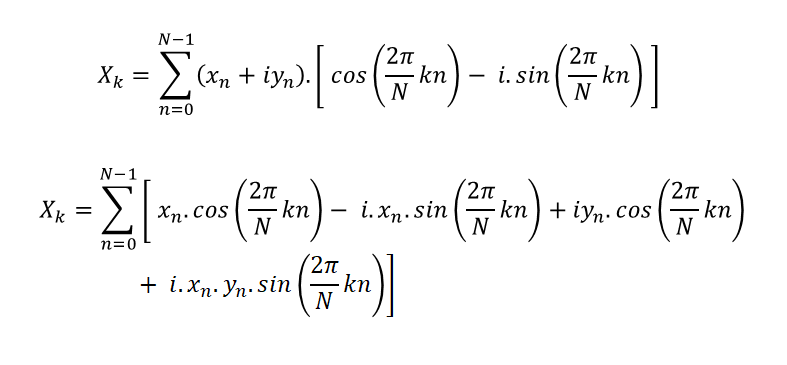

Draw
with Discrete Fourier transformations!
( Scroll Down for More! )
Fourier Series
Fourier series can be explained as expressing a repetitive curve as sum of sine curves.
Since “summation of sine waves” interpretation shows how many of waves are there at each frequency,
it is widely used in engineering, physics, and mathematics. The main idea in this interpretation is that
sine and cosine functions are mutually orthogonal, like vectors which are perpendicular to each other.
Although it was first discovered by Euler, Fourier realized and demonstrated its importance in analysis of waves;
therefore it is known by his name.

Fourier Transformation
The Fourier transform is a mathematical function that decomposes a waveform, which is a function of time, into the frequencies that make it up.
Approximation of Square Wave
Consider the function given on the right, this is the function of a sqaure wave. L, which is the period of f(x), is 2π for this example. In the summation we can see that the value of "n" increases as [1, 3, 5, 7, ...]. In the canvas below, try increasing the value of the slider, which increases the value of "n", one-by-one. As we go on increasing, we can see how a basic sine wave is converted into a square wave! For this “square signal” wave, adding more terms means turning circles with smaller radius around the former circle with higher speeds. Frequency of these turning circles is increasing in odd numbers. As we add more circles (more n's), we get closer to the function that we started with
Discrete Fourier Transformation
So now when we draw something on the canvas. The drawing is on a 2D plane so we can say that the drawing is made up of points, a series of x and y values. Now from these series of values, we can create two lists, one having a series of x values and the other having a series of y values. Now we can say that this series of numbers in a list represents a wave pattern. Each wave pattern has a particular frequency, frequency meaning how many cycles it repeats, within one unit of time. It also breaks it down into, so there are different frequencies. But there are also different amplitudes. And different phases. It breaks it down and we can visualize those wave patterns as rotating circles and these circles are called epicycles. This is done using Discrete Fourier Transformation and using the formula on the right.

Draw Something Here!
Ok so now the question arises, how we can do this “redrawing of the drawing” using only one set of epicycles. For this, in the formula, we can treat the x sub n as a complex number and multiply it with the cos and sin terms and get this as the resultant. Now this updated formula will allow us to input both x and y value of a point and get the frequency, phase, and amplitude for the epicycles using DFT.
The DFT function is updated accordingly. And this is how we use Fourier transforms to draw!